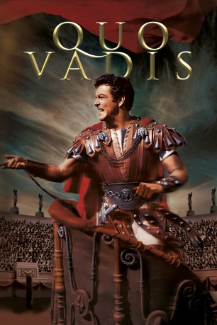
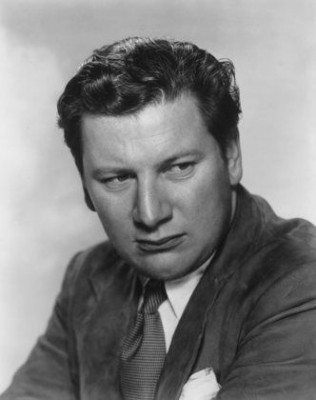
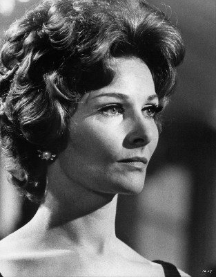

#3784 Quo Vadis
Auszeichnungen: für 8 Oscars nominiert 2 GoldenGlobes gewonnen
 
 IMDB-Wertung: 7.2 / 10
IMDB-Wertung: 7.2 / 10  Metascore: 0
Metascore: 0 
Rom brennt. Nero spielt dazu auf der Leier. Das Christentum strebt empor. Und die Kinobesucher standen Schlange, um sich diesen über Jahre gedrehten Filmgiganten, der für acht Oscars (darunter für den Besten Film) nominiert wurde, anzusehen. Robert Taylor spielt den Kommandanten einer Legion, dessen Liebe zu einer christlichen Sklavin (Deborah Kerr) die Kluft zwischen Römischem Reich und der zutiefst im Glauben verwurzelten Religionsgemeinschaft überbrückt. Und über allem waltet Nero (Peter Ustinov). Er ist Caesar, Verrückter, Mörder ein kaiserlicher Gebieter über die spektakuläre, dem Untergang geweihte Pracht, die Rom einst war.
Jahr: 1951
Dauer: 174 Minuten
FSK: 12
Land: USA Studio: MGMTonspuren: DD1.0 - ,
Untertitel: Englisch, Deutsch,
Auflösung: 1080p (1484x1080) Größe: 16384 MB
Genre: Drama, Liebe, Geschichte, Biographie
Regisseur: Mervyn LeRoy, Anthony Mann
Drehbuch: Kelley Sane
Soundtrack:
Darsteller:
 Robert Taylor als Marcus Vinicius
Robert Taylor als Marcus Vinicius Deborah Kerr als Lygia
Deborah Kerr als Lygia Leo Genn als Petronius
Leo Genn als Petronius-  Peter Ustinov als Nero
- Patricia Laffan als Poppaea
 Finlay Currie als Peter
Finlay Currie als Peter- Abraham Sofaer als Paul
-  Adrienne Corri als Young Christian Girl , uncredited
 Sophia Loren als Lygia's Slave , uncredited
Sophia Loren als Lygia's Slave , uncredited Walter Pidgeon als Narrator , uncredited
Walter Pidgeon als Narrator , uncredited Bud Spencer als Imperial Guard , uncredited
Bud Spencer als Imperial Guard , uncredited Elizabeth Taylor als Christian Prisoner in Arena , uncredited
Elizabeth Taylor als Christian Prisoner in Arena , uncredited Marina Berti als Eunice
Marina Berti als Eunice- Buddy Baer als Ursus
- Felix Aylmer als Plautius
- Nora Swinburne als Pomponia
- Ralph Truman als Tigellinus
- Norman Wooland als Nerva
- Peter Miles als Nazarius
- Geoffrey Dunn als Terpnos
- Nicholas Hannen als Seneca
- D.A. Clarke-Smith als Phaon
 Rosalie Crutchley als Acte
Rosalie Crutchley als Acte- John Ruddock als Chilo
- Arthur Walge als Croton
- Elspeth March als Miriam
- Strelsa Brown als Rufia
- Alfredo Varelli als Lucan
- Roberto Ottaviano als Flavius
- William Tubbs als Anaxander
- Pietro Tordi als Galba
- Marika Aba als Dancer - Assyrian Dance at Nero's Banquet , uncredited
- Adriano Ambrogi als Wine Bibber , uncredited
- Anna Arena als Undetermined Role , uncredited
- Alfred Baillou als Christian Prisoner in Arena , uncredited
- Giacomo Barnas als Senator , uncredited
- Scott R. Beal als Fisherman , uncredited
- John Binns als Officer , uncredited
- Francesca Biondi als Slave Girl , uncredited
- Alice Bishop als Serving Woman , uncredited
- Carlo Borelli als Noble , uncredited
- Leslie Bradley als Hasta - 2nd Praetorian , uncredited
- Alfred Brown als Undetermined Role , uncredited
- Phyllis Brown als Undetermined Role , uncredited
- Valentino Bruchi als Mirmillon , uncredited
- Rosemary Burt als Banquet Lady , uncredited
- Dante Ciriaci als Wine Bibber , uncredited
- Frank Colson als Undetermined Role , uncredited
- Luca Cortese als Old Man , uncredited
- David Craig als Little Boy , uncredited
Datei: X:\1950-1959\Quo Vadis (1951, FSK12, 1484x1080).mkv seit 09.06.2016
Festplatte: HD 1900-1970
 Es gibt insgesamt 141 Filme in der Gruppe '1950-1959'
Es gibt insgesamt 141 Filme in der Gruppe '1950-1959'